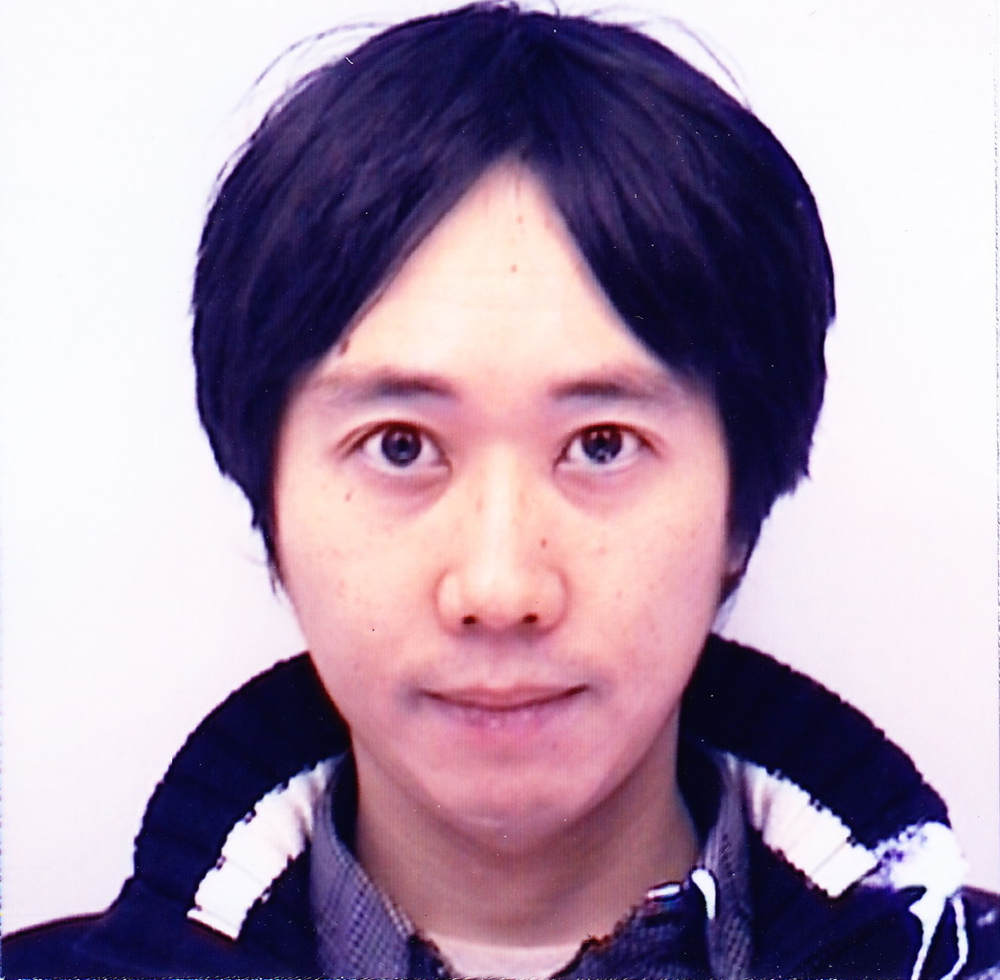

|  | Postdoctoral Research Scientist Dept. of Computer Science Rochester Institute of Technology Rochester, NY 14623 E-mail: dkasamat (at) gmail.com |
I am a postdoctoral research scientist in the
Dept. of of Computer Science
at Rochester Institute of Technology (RIT).
I completed my Ph.D., M.S., and B.S. in
Information Systems Science
at Soka University, Tokyo, Japan.